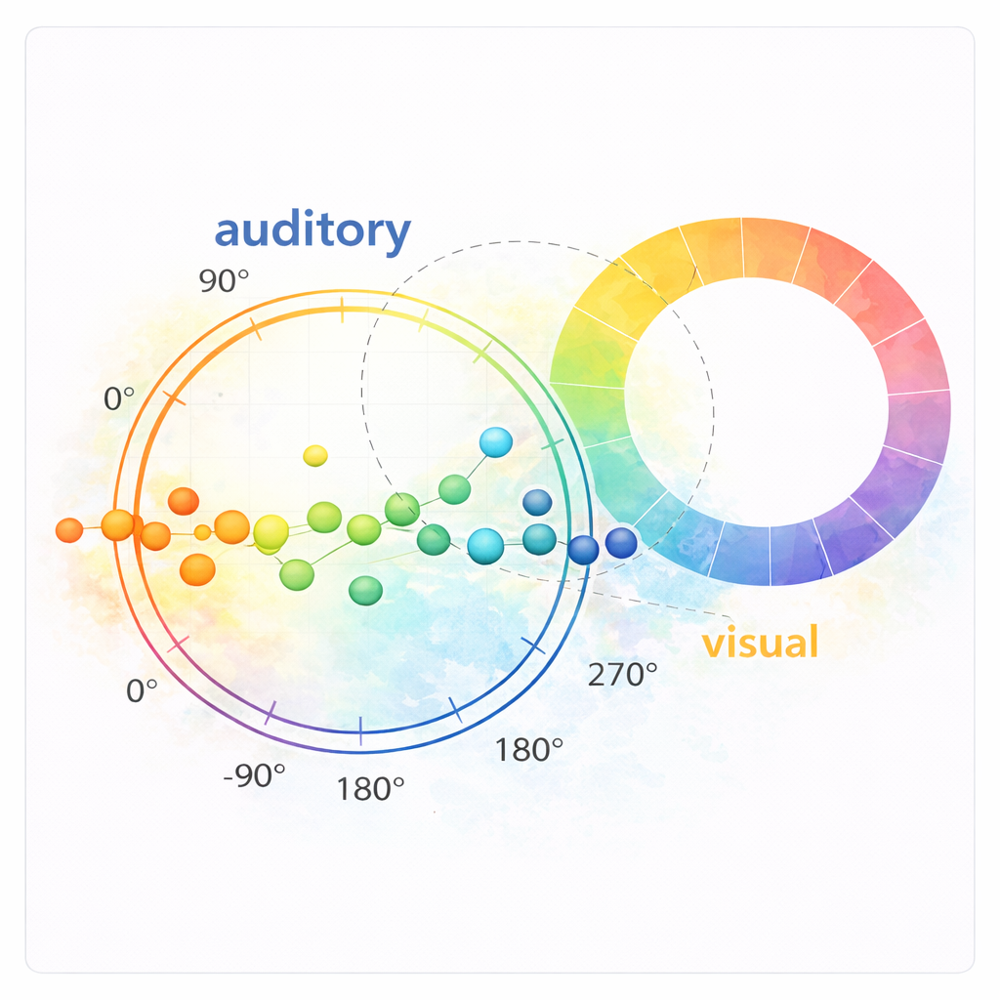

Research
My work seeks to understand how the structure of internal representations constrains perception. Across time, modalities, and individuals, I explore how internal and external information is organized to shape moment-to-moment perceptual inference, and I combine behavioural methods, electroencephalography (EEG), and statistical modeling to quantify these dynamics.
1. Memory-Guided Perception
When does learned information shape what we perceive, and when does it remain silent?
What fascinates me is that not all learned information is expressed in behaviour. I investigate when long-term memory shapes perception, and when it does not. I ask what makes stored knowledge accessible. My research examines how attention during learning, awareness of regularities, and cognitive load shape the expression of memory in perception.
2. Multisensory Inference: Dissociating Prediction from Postdiction
How does context influence perception before a stimulus appears and after it unfolds?
Perception is dynamic and often multisensory. The brain constantly integrates incoming sensory input with stored knowledge to resolve ambiguity. Sometimes context biases perception before a stimulus appears; sometimes it reshapes interpretation afterward. A central question guiding my work is how and when these influences emerge, and whether they rely on shared or distinct mechanisms.
3. Working Memory and Representational Structure Across Modalities
How is information across different senses represented and organized for perception?
To examine how information from different senses is integrated and used for perceptual inference, it must be expressed within a common representational framework. invision, continuous circular spaces have enabled precise quantification of representational content. Related approaches are now emerging in audition. In this line of work, I use circular space to place auditory and visual representations within a shared space, enabling principled cross-modal comparison and systematic investigation of multisensory integration.

4. Music as a Window into Perceptual Organization and Inference
What can music reveal about how perception organizes complex scenes?
Music offers a uniquely structured yet complex environment for studying perceptual organization. Here, I use music to investigate how sensory cues and higher-level structure are dynamically weighted during perception. This perspective positions music as an ongoing testbed for understanding how structured sensory environments reveal the principles governing perceptual inference.
5. Real-World Applications
How can internal resources be leveraged when sensory signals degrade?
When sensory signals degrade, the brain has no choice but to rely more heavily on internal resources. I investigate how voice familiarity can be leveraged to support communication in noisy environments, particularly for older adults and individuals with hearing loss. I investigate how training-induced voice familiarity influences perceptual performance, and how individual differences constrain these effects. This research lays the groundwork for targeted, individualized interventions.